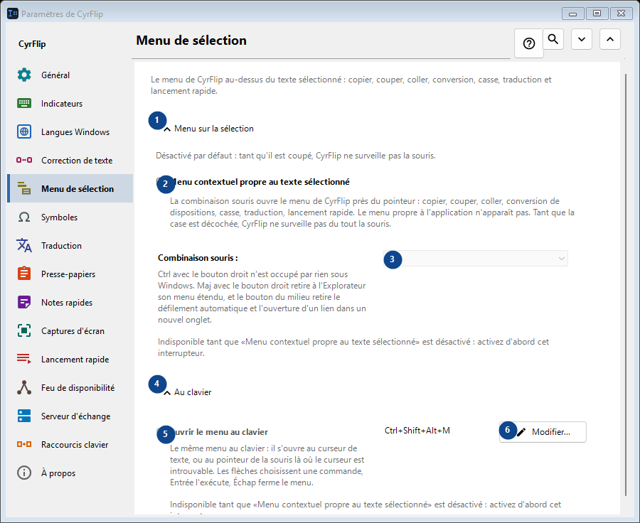
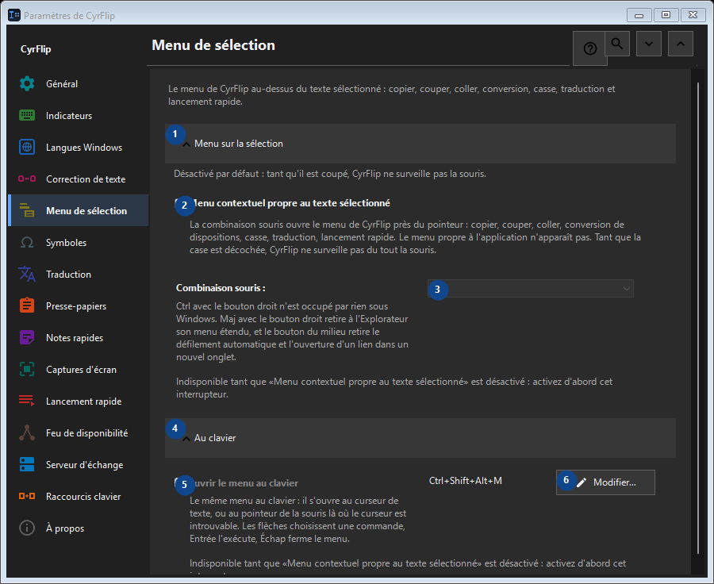

Menu de sélection
À quoi cela sert
Le menu de CyrFlip au-dessus du texte sélectionné : copier, couper, coller, conversion, casse, traduction et lancement rapide.


Ordre des actions
Les réglages s’appliquent immédiatement. Aucun ordre n’est imposé ; utilisez les groupes ci-dessous.
Éléments
1. Menu sur la sélection
Utilisez cette commande pour l’action indiquée. Lisez toute confirmation avant de l’accepter.
Vos raccourcis2. Menu contextuel propre au texte sélectionné
La combinaison souris ouvre le menu de CyrFlip près du pointeur : copier, couper, coller, conversion de dispositions, casse, traduction, lancement rapide. Le menu propre à l'application n'apparaît pas. Tant que la case est décochée, CyrFlip ne surveille pas du tout la souris.
Vos raccourcis3. Combinaison souris
Indisponible tant que «Menu contextuel propre au texte sélectionné» est désactivé : activez d'abord cet interrupteur. Cet élément est indisponible. Activez d’abord sa fonction ou sélectionnez une entrée.
Vos raccourcis4. Au clavier
Utilisez cette commande pour l’action indiquée. Lisez toute confirmation avant de l’accepter.
Vos raccourcis5. Ouvrir le menu au clavier
Indisponible tant que «Menu contextuel propre au texte sélectionné» est désactivé : activez d'abord cet interrupteur. Cet élément est indisponible. Activez d’abord sa fonction ou sélectionnez une entrée.
Vos raccourcis6. Modifier - Ouvrir le menu au clavier
Utilisez cette commande pour l’action indiquée. Lisez toute confirmation avant de l’accepter.
Vos raccourcis